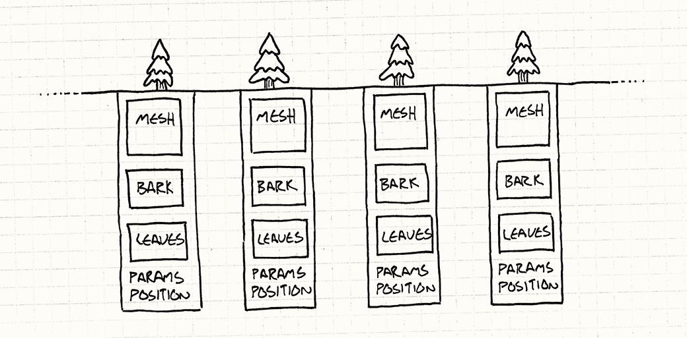
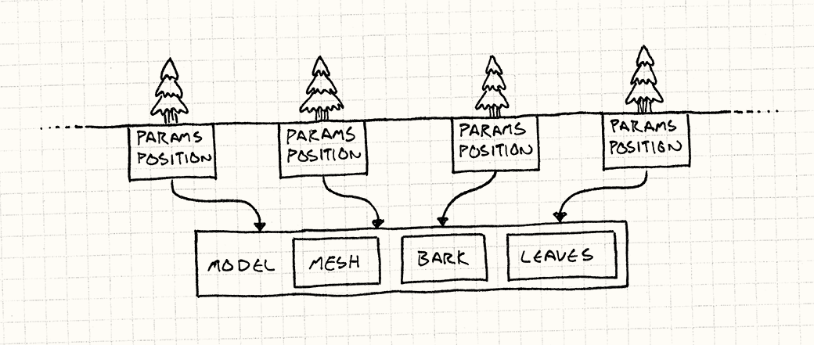
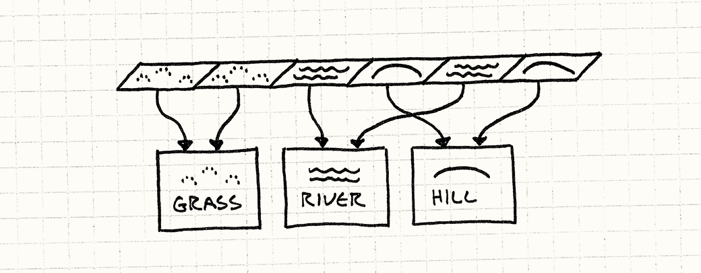

This book is a work in progress!
If you see a mistake, find something unclear, or have a suggestion, please file a ticket. To know when new chapters are up, join the mailing list:
|
Thank you! |
— Bob (@munificentbob) |
Flyweight
Game Programming Patterns / Design Patterns Revisited
The fog lifts, revealing a majestic old growth forest. Ancient hemlocks, countless in number, tower over you forming a cathedral of greenery. The stained glass canopy of leaves fragments the sunlight into golden shafts of mist. Between giant trunks, you can make out the massive forest receding into the distance.
This is the kind of otherworldly setting we dream of as game developers, and scenes like these are often enabled by a pattern whose name couldn’t possibly be more modest: the humble Flyweight.
Forest for the Trees
I can describe a sprawling woodland with just a few sentences, but actually implementing it in a realtime game is another story. When you’ve got an entire forest of individual trees filling the screen, all a graphics programmer sees is the millions of polygons they’ll have to somehow shovel onto the GPU every sixtieth of a second.
We’re talking thousands of trees, each with detailed geometry containing thousands of polygons. Even if you have enough memory to describe that forest, in order to render it, that data has to make its way over the bus from the CPU to the GPU.
Each tree has a bunch of data associated with it:
- A mesh of polygons that define the shape of the trunk, branches, and greenery.
- Textures for the bark and leaves.
- Its location and orientation in the forest.
- Tuning parameters like size and tint so that each tree looks different.
If you were to sketch it out in code, you’d have something like this:
class Tree { private: Mesh mesh_; Texture bark_; Texture leaves_; Vector position_; double height_; double thickness_; Color barkTint_; Color leafTint_; };
That’s a lot of data and the mesh and textures are particularly large. An entire forest of these objects is too much to throw at the GPU in one frame. Fortunately, there’s a time-honored trick to handling this.
The key observation is that even though there may be thousands of trees in the forest, they mostly look similar. They will likely all use the same mesh and textures. That means most of the fields in these objects are the same between all of those instances.

We can model that explicitly by splitting the object in half. First, we pull out the data that all trees have in common and move it into a separate class:
class TreeModel { private: Mesh mesh_; Texture bark_; Texture leaves_; };
The game only needs a single one of these, since there’s no reason to have the same meshes and textures in memory a thousand times. Then, each instance of a tree in the world has a reference to that shared TreeModel. What remains in Tree is the state that is instance-specific:
class Tree { private: TreeModel* model_; Vector position_; double height_; double thickness_; Color barkTint_; Color leafTint_; };
You can visualize it like this:

This is all well and good for storing stuff in main memory, but that doesn’t help rendering. Before the forest gets on screen, it has to work its way over to the GPU’s memory. We need to express this resource sharing in a way that the graphics card understands.
A Thousand Instances
To minimize the amount of data we have to push to the GPU, we want to be able to send the shared data — the TreeModel — just once. Then, separately, we push over every tree instance’s unique data — its position, color, and scale. Then we tell the GPU, "use that one model to render each of these instances".
Fortunately, today’s graphics APIs and cards support exactly that. The details are fiddly, and out of the scope of this book, but both Direct3D and OpenGL have support for instanced rendering.
In both APIs, you provide two streams of data. The first is the blob of common data that will be rendered multiple times — the mesh and textures in our arboreal example. The second is the list of instances and their parameters that will be used to vary that first chunk of data each time it’s drawn. With a single draw call, an entire forest appears.
The Flyweight Pattern
Now that we’ve got one concrete example under our belts, I can walk you through the general pattern. Flyweight, like its name implies, comes into play when you have objects that need to be more lightweight, generally because you have too many of them.
With instanced rendering, it’s not so much that they take up too much memory as it is they take too much time to push each separate tree over the bus to the GPU, but the basic idea is the same.
The pattern solves that by separating out an object’s data into two kinds: The first kind of data is the stuff that’s not specific to a single instance of that object and can be shared across all of them. The Gang of Four calls this the intrinsic state, but I like to think of it as the "context-free" stuff. In the example here, this is the geometry and textures for the tree.
The rest of the data is the extrinsic state, the stuff that is unique to that instance. In this case, that is each tree’s position, scale, and color. Just like in the chunk of sample code up there, this pattern saves memory by sharing one copy of the intrinsic state across every place where an object appears.
From what we’ve seen so far, this just seems like basic resource sharing, and hardly worth being called a pattern. That’s partially because in this example here, we could come up with a clear separate identity for the shared state: the TreeModel.
I find this pattern to be less obvious (and thus more clever) when used in cases where there isn’t a real well-defined identity for the shared object. In those cases, it feels more like an object is magically in multiple places at the same time. Let me show you another example.
A Place To Put Down Roots
The ground these trees are growing on needs to be represented in our game too. There can be patches of grass, dirt, hills, lakes, rivers, and whatever other terrain you can dream up. We’ll make the ground tile-based: the surface of the world is a huge grid of tiny tiles. Each tile is covered in one kind of terrain.
Each terrain type has a number of properties that affect gameplay:
- A movement cost that determines how quickly players can move through it.
- A flag for whether it’s a watery terrain that can be crossed by boats.
- A texture used to render it.
Because we game programmers are paranoid about efficiency, there’s no way we’d store all of that state in each tile in the world. Instead, a common approach is to use an enum for terrain types:
enum Terrain { TERRAIN_GRASS, TERRAIN_HILL, TERRAIN_RIVER // Other terrains... };
Then the world maintains a huge grid of those:
class World { private: Terrain tiles_[WIDTH][HEIGHT]; };
To actually get the useful data about a tile, we do something like:
int World::getMovementCost(int x, int y) { switch (tiles_[x][y]) { case TERRAIN_GRASS: return 1; case TERRAIN_HILL: return 3; case TERRAIN_RIVER: return 2; // Other terrains... } } bool World::isWater(int x, int y) { switch (tiles_[x][y]) { case TERRAIN_GRASS: return false; case TERRAIN_HILL: return false; case TERRAIN_RIVER: return true; // Other terrains... } }
You get the idea. This works, but I find it ugly. I think of movement cost and wetness as data about a terrain, but here that’s embedded in code. Worse, the data for a single terrain type is smeared across a bunch of methods. It would be really nice to keep all of that encapsulated together. After all, that’s what objects are designed for.
It would be great if we could have an actual terrain class, like:
class Terrain { public: Terrain(int movementCost, bool isWater, Texture texture) : movementCost_(movementCost), isWater_(isWater), texture_(texture) {} int getMovementCost() const { return movementCost_; } bool isWater() const { return isWater_; } const Texture& getTexture() const { return texture_; } private: int movementCost_; bool isWater_; Texture texture_; };
But we don’t want to pay the cost of having an instance of that for each tile in the world. If you look at that class, you’ll notice that there’s actually nothing in there that’s specific to where that tile is. In flyweight terms, all of a terrain’s state is "intrinsic" or "context-free".
Given that, there’s no reason to have more than one of each terrain type. Every grass tile on the ground is identical to every other one. Instead of having the world be a grid of enums or Terrain objects, it will be a grid of pointers to Terrain objects:
class World { private: Terrain* tiles_[HEIGHT][WIDTH]; // Other stuff... };
Each tile that uses the same terrain will point to the same terrain instance.

Since the terrain instances are used in multiple places, their lifetimes would be a little more complex to manage if you were to dynamically allocate them. Instead, we’ll just store them directly in the world:
class World { public: World() : grassTerrain_(1, false, GRASS_TEXTURE), hillTerrain_(3, false, HILL_TEXTURE), riverTerrain_(1, true, RIVER_TEXTURE) {} private: Terrain grassTerrain_; Terrain hillTerrain_; Terrain riverTerrain_; // Other stuff... };
Then we could use those to paint the ground like this:
void World::generateTerrain() { // Fill the ground with grass. for (int x = 0; x < WIDTH; x++) { for (int y = 0; y < HEIGHT; y++) { // Sprinkle some hills. if (random(10) == 0) { tiles_[x][y] = &hillTerrain_; } else { tiles_[x][y] = &grassTerrain_; } } } // Lay a river. int x = random(WIDTH); for (int y = 0; y < HEIGHT; y++) { tiles_[x][y] = &riverTerrain_; } }
Now instead of methods on World for accessing the terrain properties, we can just expose the Terrain object directly:
const Terrain& World::getTile(int x, int y) const { return *tiles_[x][y]; }
This way, World is no longer coupled to all sorts of details of terrains. If you want some property of the tile, you can get it right from that object:
int cost = world.getTile(2, 3).getMovementCost();
We’re back to the pleasant API of working with real objects. And we did this with almost no overhead: a pointer is often no larger than an enum.
What About Performance?
I say "almost" here because the performance bean counters will rightfully want to know how this compares to using an enum. Referencing the terrain by pointer implies an indirect lookup. To get to some terrain data like the movement cost, you first have to follow the pointer in the grid to find the terrain object, and then find the movement cost there. Chasing a pointer like this can cause a cache miss, which can slow things down.
As always, the golden rule of optimization is profile first. Modern computer hardware is too complex for performance to be a game of pure reason anymore. In my tests for this chapter, there was no penalty for using a flyweight over an enum. Flyweights were actually noticeably faster. But that’s entirely dependent on how other stuff is laid out in memory.
What I am confident of is that using flyweight objects shouldn’t be dismissed out of hand. They give you the advantages of an object-oriented style without the expense of tons of objects. If you find yourself creating an enum and doing lots of switches on it, consider this pattern instead. If you’re worried about performance, at least profile first before changing your code to a less maintainable style.
See Also
-
In the tile example, we just eagerly created an instance for each terrain type and stored it in
World. That made it easy to find and reuse the shared instances. In many cases, though, you won’t want to create all of the flyweights up front.If you can’t predict which ones you actually need, it’s better to create them on demand. To get the advantage of sharing, when you request one, you first see if you’ve already created an identical one. If so, you just return that instance.
This usually means that you have to encapsulate construction behind some interface that can first look for an existing object. Hiding a constructor like this is an example of the Factory Method pattern.
In order to return a previously created flyweight, you’ll have to keep track of the pool of ones that you’ve already instantiated. As the name implies, that means that an Object Pool might be a helpful place to store them.
-
When you’re using the State pattern, you often have "state" objects that don’t have any fields that are specific to the machine that the state is being used in. The state’s identity and methods are enough to be useful. In that case, you can apply this pattern and reuse that same state instance in multiple state machines at the same time without any problems.